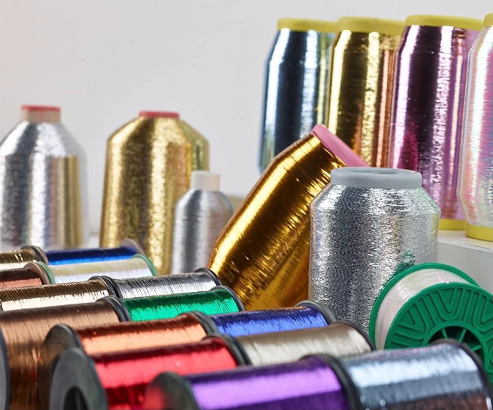

Metallic yarn: specifications and buying guide
With 15 years of specialised experience in metallic yarn importing and trading, Farazi Company presents metallic, zari and golabatoon yarns in its range. Review yarn specifications together with the intended application, colour and quantity.

What specifications should a metallic yarn enquiry include?
The current catalogue lists MH, MX, M and SD types; sizes 1/100, 1/92, 1/69 and 1/32; and thicknesses of 12, 15, 20, 23 and 25 microns. These specifications do not imply that every combination is available. Include the exact type and sample specifications in your enquiry.
Listed colours include silver, gold, transparent, black and assorted colours. Screen colours can differ from the physical sample; confirm the sample colour and specifications before purchasing.
Choose for the application as well as the appearance
Shine is only one selection criterion. Consider the fabric construction, combination with other yarns and production conditions alongside the sample specifications. If you have a previous sample, clear photos of the yarn and its specification label help make the sourcing discussion more precise.
How can you request a metallic yarn quotation?
For a quotation, send the yarn type, code, colour, size or thickness and quantity. Pricing and sourcing availability are confirmed after checking the specifications and current stock; a website photo does not mean every model is in stock.
How do metallic and fancy yarns differ?
On this site, metallic yarn refers to products with a metallic effect. Fancy yarn is a broader description for special effects in yarn structure and appearance and is not a sufficient purchasing specification on its own. Compare samples and technical specifications.
Tell us about the yarn you need
Send the specifications, a sample photo and required quantity for review.